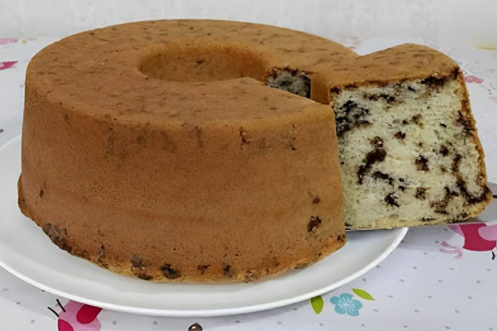

Bolo de Chocolate da Vovó: Regina
INGREDIENTES:
Ingrediente da Massa:
- 4 Ovos
- 4 Colheres de (sopa), de Chocolate em pó
- 2 Colheres de (sopa) de Manteiga
- 3 Xícaras de (chá) de Farinha de Trigo
- 2 Xícaras de (chá) de Açúcar Refinado
- 1 Xícaras de (chá) de Leite
Ingrediente da Calda:
- 2 colheres (sopa), de manteiga
- 7 Colheres de (sopa), de Chocolate em Pó com 50% Cacau
- 2 Latas de Creme de Leite com Soro
- 3 Colheres (sopa) de Açúcar
MODO DE PREPARO:
Massa:
- Em um liquidificador, adicione os ovos, o chocolate em pó, a manteiga, a farinha de trigo, o açúcar e o leite.
- Bata tudo por 5 minutos, ou até a massa ficar homogênea.
- Adicione o fermento e misture DELICADAMENTE, com uma espátula.
- Pegue uma forma e unte-a.
- Despeje a massa na forma untada.
- Coloque no forno e asse por cerca de 40 minutos, em forno médio (180ºC) preaquecido.
Calda:
- Em uma panela, aqueça a manteiga.
- Misture o chocolate em pó até que esteja homogêneo.
- Acrescente o creme de leite.
- Misture bem até obter uma consistência cremosa.
- Desligue o fogo.
Bolo de Aipim da Vovó: Regina
-
O Bolo de Aipim, também conhecido como bolo de mandioca, é uma receita brasileira tradicional e saborosa. Feito com aipim ralado, leite de coco e queijo, esse bolo é cremoso, doce e perfeito para o café da manhã ou lanche da tarde.
INGREDIENTES:
Ingrediente da Massa:
- 1 Kg de Aipim (Mandioca) ralada.
- 200ml de leite de coco.
- 2 Xícaras de (chá) de Açúcar.
- 100g de Manteiga Derretida.
- 3 Ovos.
- 1 Xícaras de (Queijo) Ralado.
- 1 Colher de (Sopa) de Fermento em pó.
MODO DE PREPARO:
Massa:
- Misture o Aipim ralado, o leite de coco, açúcar, a mainteiga, os ovos e o queijo em uma tigela grande.
- Adicione o fermento e misture bem.
- Pegue uma forma e a deixe untada.
- Despeje a massa na forma untada.
- Coloque no forno pré-aquecido à (180ºC) por aproximadamente 1 hora ou até dourar.
- Deixe esfriar antes de desenformar e após é só servir.
- Rendimento em torno de: 10 Porções.
As Raízes do Bolo de Aipim
O Segredo de um Bolo de Aipim Perfeito
Servindo o Bolo de Aipim

Para fazer esse bolo vamos utilizar ovos, granulado de chocolate, óleo, leite, açúcar, farinha de trigo e fermento em pó. Iremos bater no liquidificador os ingredientes da massa do bolo formigueiro, exceto a farinha de trigo, o granulado e o fermento em pó que serão misturados numa tigela. Em seguida vamos despejar numa forma de furo central untada e enfarinhada e assar o bolo formigueiro por aproximadamente 40-45 minutos em forno pré-aquecido a 180 graus. Iremos fazer o teste do palito, se sair seco e limpo, o mais espetacular bolo da vida acaba de ficar prontinho!
Bolo Formigueiro da Vovó: Regina
- Bolo formigueiro é um clássico da confeitaria apreciado por muita gente, e perfeito para ser saboreado num café da manhã ou chá da tarde. Fica muito macio e delicioso, com uma textura maravilhosa. Confira o passo a passo dessa versão e faça essa delícia de bolo formigueiro!
Como fazer bolo formigueiro
INGREDIENTES:
Massa:
- 3 Ovos
- 1/2 Xícara (chá), de granulado de chocolate
- 1/2 Xícara (chá), de Óleo
- 1 Xícaras de (chá) de Leite
- 1 1/2 Xícaras de (chá) de Açúcar
- 2 1/2 Xícaras de (chá) de Farinha de Trigo.
- 1 Colher (sopa) de fermento em pó
MODO DE PREPARO:
Massa:
- Coloque no liquidificador os ovos, o óleo e o açúcar.
- Bata por 2min ou até ficar homogênea a massa.
- Transfira essa mistura para uma tigela.
- E Acrescente a Fatinha de Trigo, aos poucos, misturando bem a cada adição.
- Acrescente o Granulado de Chocolate e o Fermento em pó
- Mexa levemente apenas para incorporar.
- Pegue uma forma de (22cm de diâmetro) de furo central
- unte a forma
- Despeje a massa
- Asse em um forno pré-aquecido a 180ºC por cerca de 40min a 45min.
- Retire do forno e espere amornar.
- Sirva em seguida.
Calda:
- Em uma panela, aqueça a manteiga.
- Misture o chocolate em pó até que esteja homogêneo.
- Acrescente o creme de leite.
- Misture bem até obter uma consistência cremosa.
- Desligue o fogo.